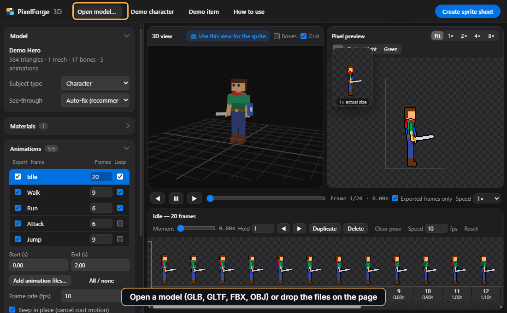
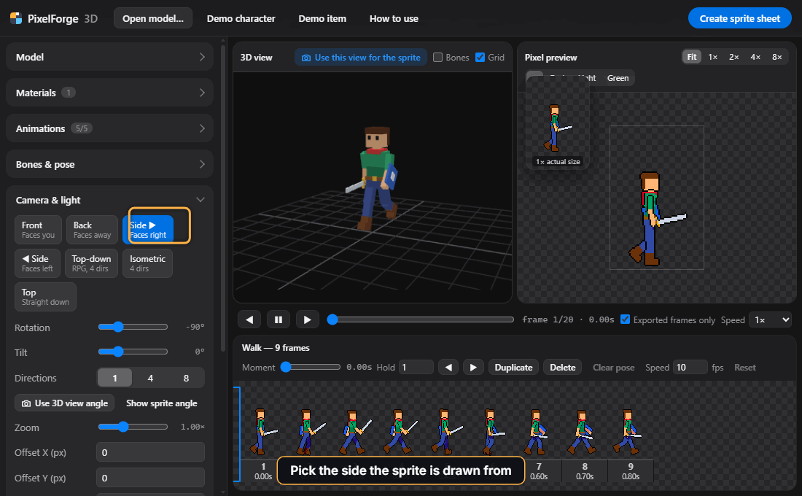
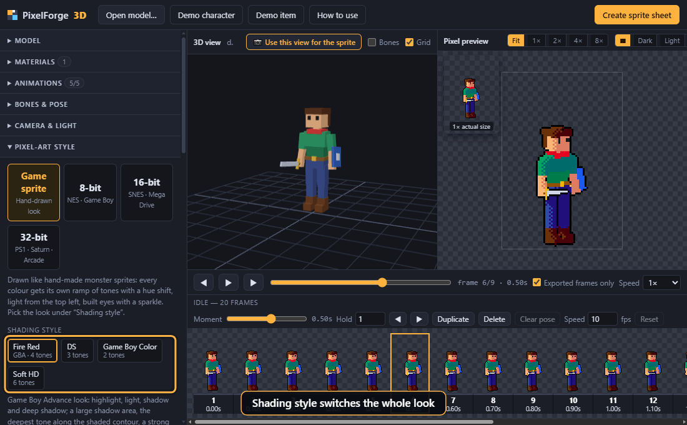
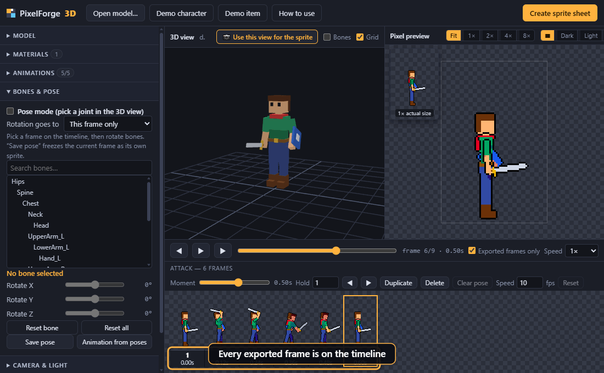
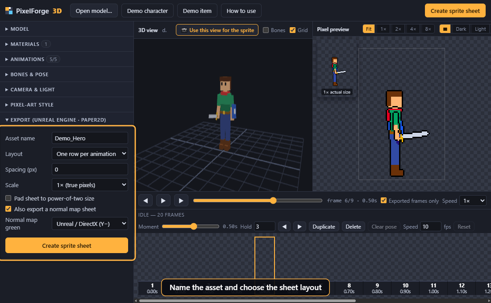

From a 3D model to a sprite sheet
Five short steps. Everything runs in your browser and your models never leave your computer. The recordings use the two demo models that are built into the app.
1Load a model and choose its animations
Press Open model or drop the files on the page: GLB, GLTF, FBX or OBJ, with their textures. The model appears in the 3D view and as pixel art beside it.
- Click an animation name to preview it.
- Tick the animations you want in the sheet and set how many frames each one gets.
- Animations kept in separate files can be added if they use the same skeleton.

2Pick the angle and the number of directions
Under Camera & light, choose the side the sprite is drawn from. Top-down and isometric views come in four or eight directions, and each direction gets its own row of frames.
- For any other angle, orbit the 3D view and press Use this view for the sprite.
- The light keeps its place relative to the camera, so every direction is lit the same way.

3Choose the look
Shading style switches the whole look at once: the number of tones per colour, the size of the shadows, the outline and the number of colors.
- Fire Red: four tones, large shadows, a light checkerboard where two tones meet. 64×64.
- DS: three tones and small clean shadows.
- Game Boy Color: two tones and a black outline.
- Soft HD: six tones, for sprites of 128 pixels and up.
Then pick a size and, if you like, fine-tune the shadow area, highlights, hue shift and dithering. The classic 8-bit, 16-bit and 32-bit styles with fixed palettes are in the same panel.

4Adjust frames and poses
Every exported frame sits on the timeline under the views. Select a frame to move it in time, hold it longer, duplicate it or delete it.
- Turn on Pose mode, pick a joint in the 3D view or in the list, and rotate it. The change stays on the selected frame.
- Save pose keeps the current pose as a sprite of its own.

5Create the sprite sheet
Press Create sprite sheet. Download all gives a ZIP with:
- the sheet as a PNG, and one strip per animation;
- a
.paper2dspritesfile that Unreal Engine imports as one sprite per frame; - a JSON file describing every animation, and the palette;
- optionally a normal-map sheet, so the sprites react to lights in the game;
- a readme with the import steps for that export.
